A boutique guitar rig for Windows. Five guitars, four tube amps with their own cabinets, twenty-two pedals, a looper and fifteen song-inspired presets — as a VST3 plugin and a standalone app.
Windows 10 / 11 · 64-bit · VST3 + Standalone · works offline, no account
Drag anything from the library onto the rig, reorder pedals by dragging them onto each other, save the result as your own preset.
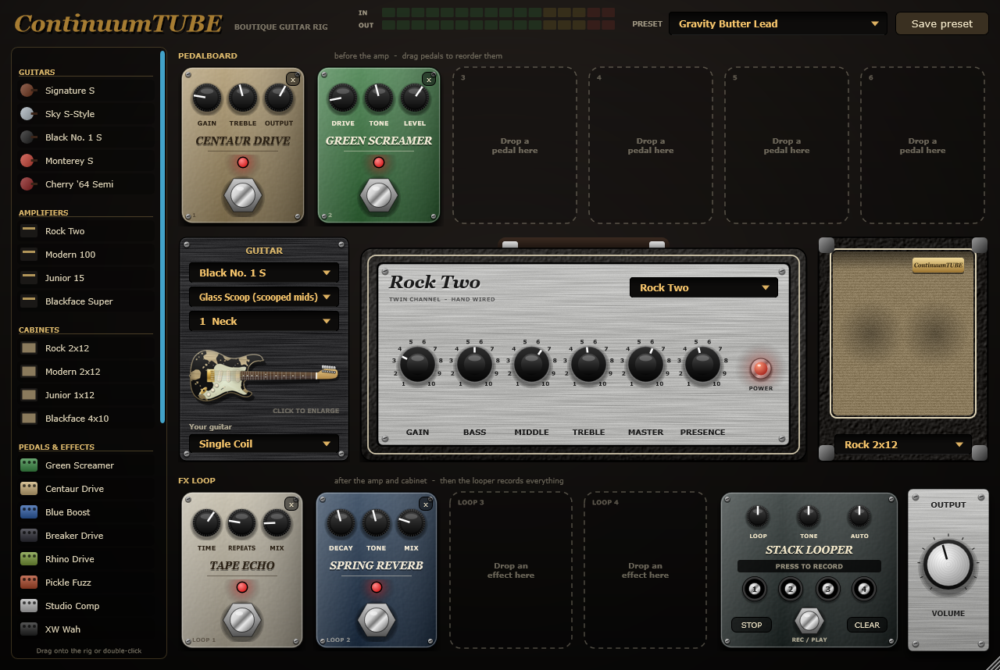
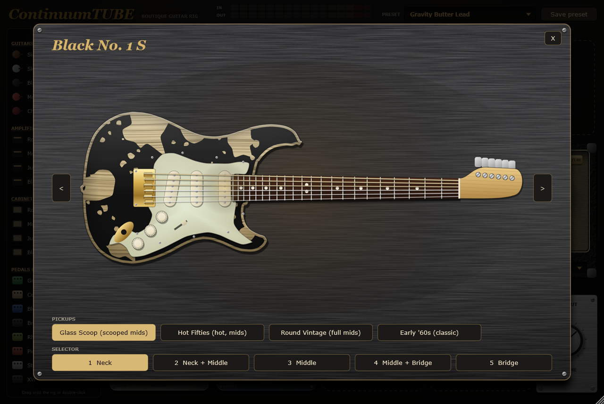
Pick a model and ContinuumTUBE reshapes the pickups of the guitar you're actually playing. Every one has switchable pickup sets and a working selector.
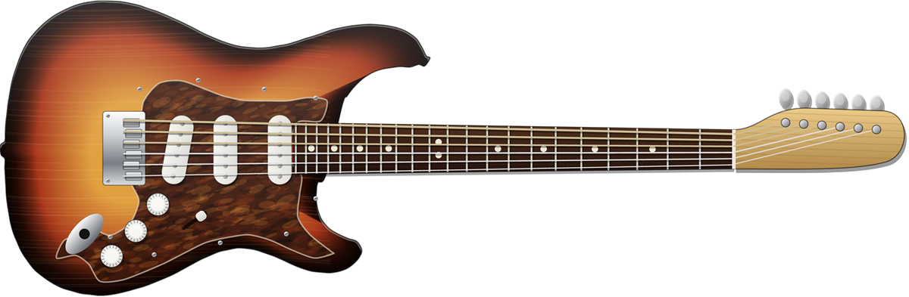
S-style · 5-waySunburst, tortoise guard. Scooped, glassy and articulate.
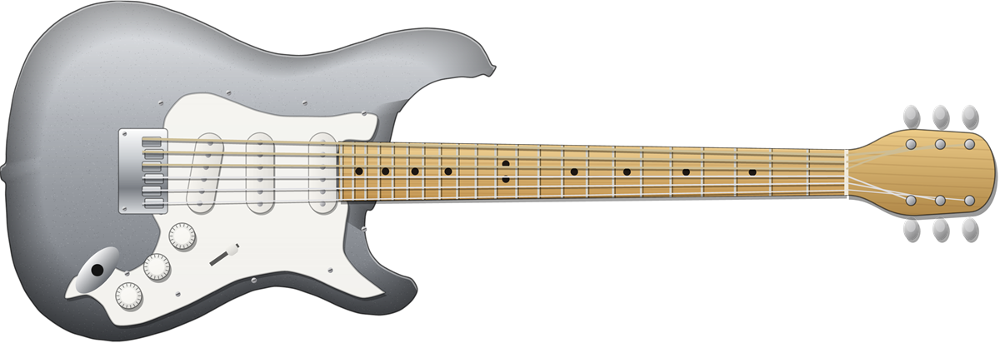
S-style · 5-waySilver, maple neck. Round vintage mids, a softer top.
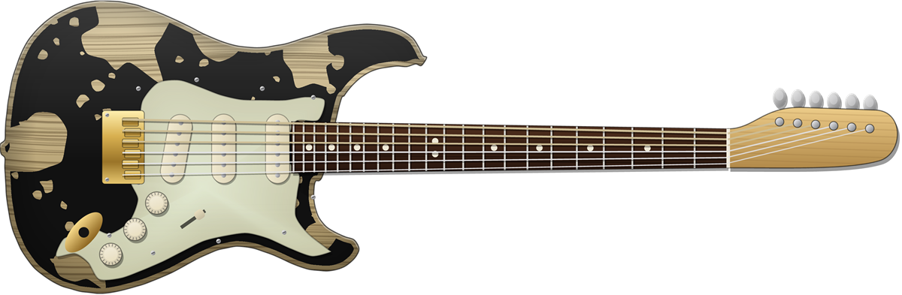
S-style · 5-wayWorn black relic, gold hardware. Fat, warm and thick.
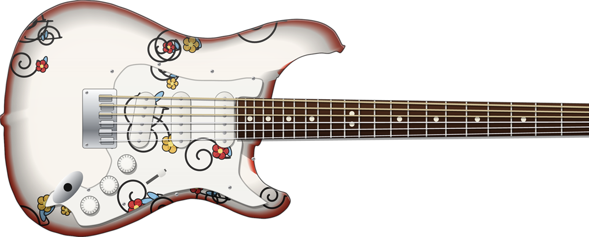
S-style · 5-wayHand-painted finish. Hotter pickups, a bright, barking attack.
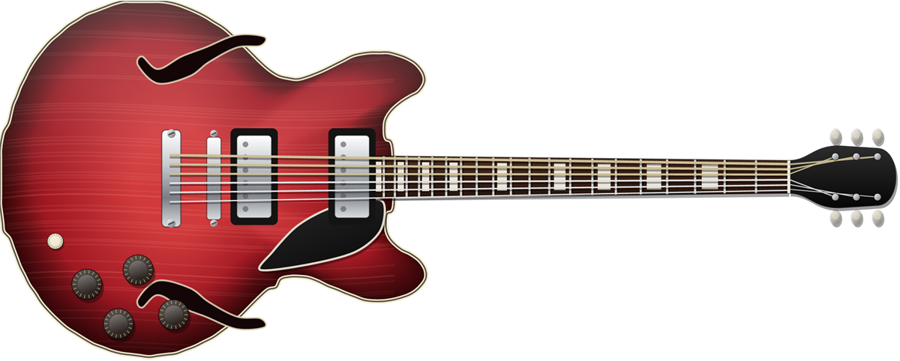
Semi-hollow · 3-wayTwin humbuckers. Far more output, woody and round.
Each amp has its own way of breaking up and its own cabinet — switch amp and the cab follows.
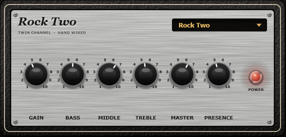
Huge, chimey clean, deep lows and forward mids. Warms up only when you push it.
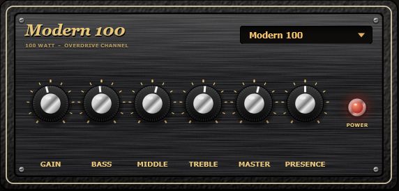
The overdrive channel: vocal mids, smooth top, long compressed sustain.
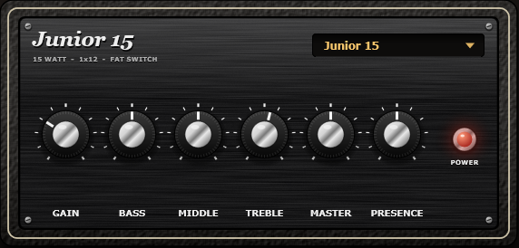
A small combo that breaks up early: nasal, raw, light on bass.
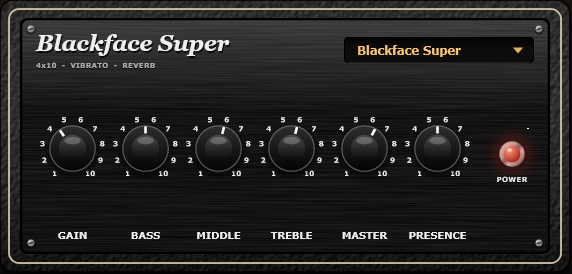
Scooped mids, sparkling highs and lots of clean headroom.
Six slots before the amp, four in the FX loop after the cabinet. Every pedal has its own face, knobs and footswitch.
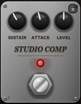
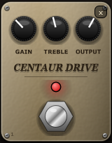
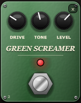
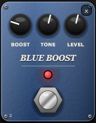
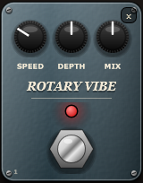
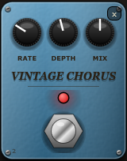
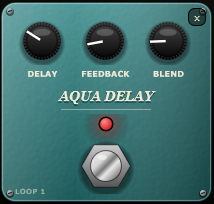
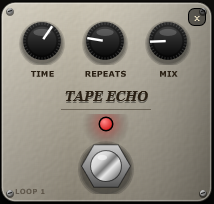
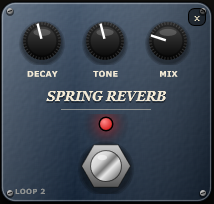
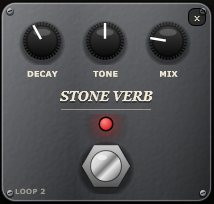
…and twelve more:
The Stack Looper records everything you hear, effects included. Press the footswitch and it starts on your first note; press again and the loop plays. Stack up to four layers, mute or clear each one. Loops keep going when you switch preset, so you can loop a clean rhythm and solo over it.
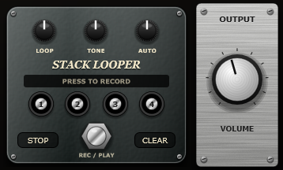
Starting points built around the tones of specific songs and eras: mostly clean or just breaking up, with a few crunch and lead sounds that each use a different drive. All at a similar volume.
Free, offline, no account. One zip with both the plugin and the standalone app.
Get ContinuumTUBE-1.1.0-Windows.zip from the latest release and unzip it.
Run ContinuumTUBE.exe, open Options → Audio/MIDI Settings and pick your interface. Choose Windows Audio (Low Latency Mode) for the lowest latency.
Copy ContinuumTUBE.vst3 to C:\Program Files\Common Files\VST3 and rescan plugins.
The app isn't code-signed: if Windows shows "Windows protected your PC", click More info → Run anyway.